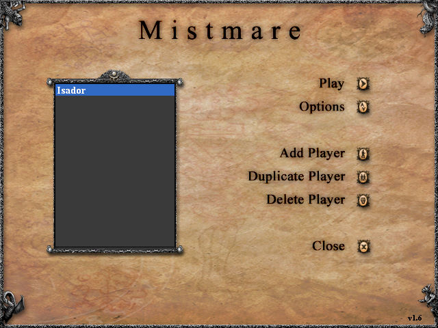
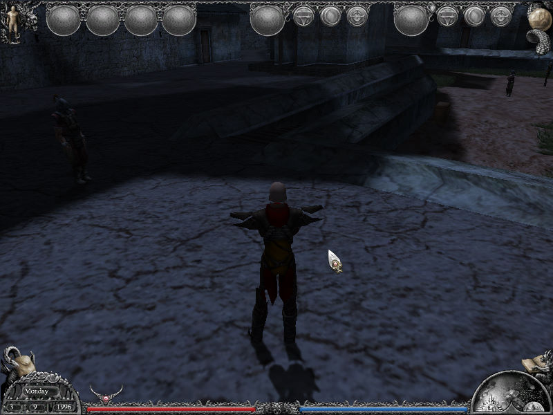

名稱：夢靨魔域 (Mistmare，英文版)
簡介：Arxel Tribe與Sinister 2003年共同開發的角色扮演遊戲，由Strategy First代理發
行，以全3D畫面顯示，採單人即時方式戰鬥。本遊戲以其大量bug和超高難度聞名，為
「電腦遊戲世界」三款獲得最低零星評價的遊戲之一，一般並不推薦 [待補]。


保護：光碟
備註：非安裝移機者，需修改安裝目錄cd.txt中，光碟所在目錄。
檔案：mistmare_patch_1.6.rar = 1.6更新檔
mistmare_patch_1.7.rar = 1.7更新檔（但顯示仍為1.6）